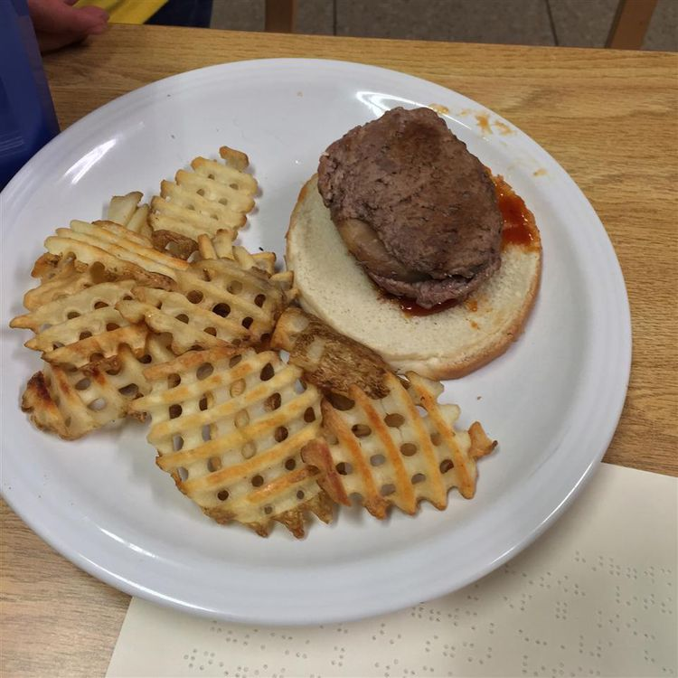

Burger

Friday of surprise Burgers
Don't miss out on these delicious Burgers, you only need these ingredients!
- 1 pound lean ground beef
- 4 pineapple rings
- ½ cup ketchup
- ½ cup brown sugar
- 1 tablespoon prepared yellow mustard
- Preheat a grill for high heat.
- Divide the ground beef into four portions, and form patties around pineapple rings so that none of the pineapple is showing. In a small saucepan, mix together the ketchup, brown sugar, and mustard. Heat until sugar is dissolved. Set aside.
- Place burgers on the grill, and cook for about 5 minutes per side, or until well done. Spoon some of the brown sugar sauce over the burgers before serving.
Main Page